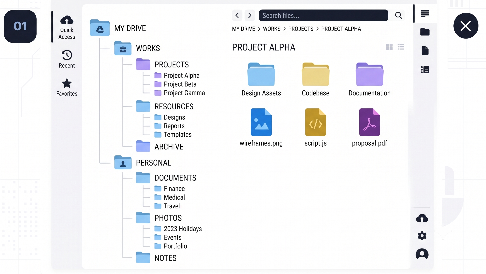

📁 Danh Sách Bài Tập Thực Hành
Tập hợp sản phẩm cốt lõi minh chứng cho năng lực số đã tích lũy.

Thao tác cơ bản với tệp tin và thư mục
Thiết lập cây thư mục tối ưu phân loại theo môn học và áp dụng quy tắc đặt tên tệp khoa học giúp quản lý dữ liệu hiệu quả. Rèn luyện kỹ năng tạo, đổi tên, sao chép, di chuyển, xóa tệp tin và thư mục một cách thành thạo trên hệ điều hành Windows (có thể điều chỉnh cho macOS/Linux).
Tìm kiếm và đánh giá thông tin học thuật
Khai thác tài liệu chuyên sâu bằng toán tử nâng cao trên Google Scholar và lập bảng kiểm định nguồn tin học thuật uy tín phục vụ nghiên cứu. Phát triển kỹ năng tìm kiếm và đánh giá thông tin học thuật từ các nguồn đáng tin cậy.
Viết Prompt hiệu quả cho các tác vụ học tập
Trình bày sự so sánh trực quan giữa cấu trúc Prompt ban đầu và Prompt cải tiến kèm kết quả đầu ra thực tế từ AI nhằm tối ưu hóa hiệu suất nghiên cứu dữ liệu. Phát triển kỹ năng viết prompt hiệu quả để tận dụng tối đa khả năng của các mô hình ngôn ngữ lớn trong học tập.
Sử dụng công cụ hợp tác trực tuyến cho dự án nhóm
Trình bày minh chứng thực tế về quá trình điều phối công việc, sử dụng không gian đám mây chia sẻ và phương thức phối hợp trực tuyến hiệu quả cùng nhóm dự án. Thành thạo các công cụ hợp tác trực tuyến và thể hiện năng lực quản lý, điều phối cá nhân trong dự án nhóm.
Sử dụng AI tạo sinh để hỗ trợ sáng tạo nội dung
Trưng bày các sản phẩm truyền thông số hoàn thiện (hình ảnh, kịch bản hoặc tài liệu đa phương tiện) được thiết kế và tối ưu hóa năng suất với sự hỗ trợ đắc lực từ AI. Thành thạo việc sử dụng các công cụ AI tạo sinh để hỗ trợ quá trình sáng tạo nội dung số.
Sử dụng AI có trách nhiệm trong học tập và nghiên cứu
Xây dựng hệ thống các nguyên tắc ứng xử cá nhân và đạo đức công nghệ khi khai thác AI, đảm bảo tuyệt đối các quy định về an toàn thông tin và liêm chính học thuật. Phát triển kỹ năng sử dụng AI có trách nhiệm và đạo đức trong học tập và nghiên cứu.
Phân tích tài liệu với trợ lý nghiên cứu AI
Rèn luyện kỹ năng sử dụng các công cụ AI như Elicit hoặc Consensus để nhanh chóng tổng quan tài liệu khoa học phục vụ nghiên cứu và phân tích dữ liệu chuyên sâu.